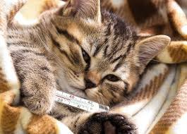

Quais são os distúrbios gastrointestinais e digestivos em gatos?

Distúrbio digestivo (distúrbio gastrointestinal) é qualquer condição que impeça a digestão correta ou altera o ritmo que o alimento passa pelo trato digestivo. Os distúrbios digestivos são uma das causas mais comuns para se buscar a prática veterinária. Distúrbios digestivos podem levar à desidratação, desnutrição ou outros problemas sérios de saúde por isso é importante reconhecer os sinais e consultar o seu veterinário. Quais são os tipos e causas de distúrbios digestivos em gatos? Existem vários tipos diferentes de distúrbios digestivos. As causas de distúrbios digestivos variam de comer algo diferente ou não apropriado para gatos à inflamação de órgãos gastrointestinais, intolerância ou sensibilidades alimentar, infecções ou falta de enzimas digestivas. Algumas raças de gatos como Sphynx, Rex e Ragdoll estão mais propensos a problemas digestivos particulares. O seu veterinário poderá realizar exames para determinar a causa exata do problema GI do seu gato. GASTROENTERITE AGUDA Trato digestivo inflamado, geralmente dura pouco. As causas podem incluir a ingestão de alimento rançoso ou estragado, engolir objetos estranhos, ingestão de plantas tóxicas, parasitas, estresse, alergias alimentares e algumas condições de doença. COLITE Mais comuns em gatos abaixo de 5 anos de idade, a colite causa inflamação do intestino grosso que resulta na passagem frequente, dolorosa das fezes. Se o seu gato apresentar colite, ela poderá conter muco e sangue. Mais frequentemente, a colite é causada por tumores ou pólipo, mudança na alimentação, alergias (incluindo as alimentares), objetos estranhos engolidos e certas doenças. DIARREIA Causada por infecções, parasitas internas, estresse, mudança na alimentação do gato, restos de comida ou lanches calóricos, comida estragada do lixo e disfunção de órgãos do organismo. CONSTIPAÇÃO Geralmente causada pela desidratação, ingestão insuficiente de fibras, ingestão de pelo ou outros objetos estranhos, envelhecimento, tumores, traumas ou fraturas, doença da medula espinhal, distúrbios nervosos do intestino grosso, distúrbios metabólicos ou endócrinos, debilitação e falta de exercício. PANCREATITE Inflamação ou infecção do pâncreas (glândula alongada e afilada localizada atrás do estômago). As origens são geralmente desconhecidas. As possíveis causas são diminuição do fluxo sanguíneo (devido à desidratação ou outros processos por doença) infecções, doença ou trauma. SÍNDROME DO INTESTINO IRRITÁVEL Comumente associada com inflamação crônica e desconforto do intestino do gato, tipicamente não está diretamente ligada à doença gastrointestinal. Algumas suspeitas das causas incluem intolerâncias alimentares e a capacidade do alimento do gato passar de modo efetivo pelo trato gastrointestinal. Transtorno mental pode também ser um fator contribuinte para essa condição. INSUFICIÊNCIA PANCREÁTICA EXÓCRINA Essa condição é caracterizada pela perda de peso, aumento de apetite e grandes quantidade de fezes moles. A pancreatite crônica é a causa mais comum. MÁ ABSORÇÃO DO INTESTINO DELGADO A inflamação do intestino delgado atrapalha a absorção de nutrientes causando diarreia persistente, perda de peso e perda de apetite do seu gato. O meu gato tem distúrbio gastrointestinal ou digestivo? Os sinais mais comuns de problemas no estômago e distúrbios digestivos em gatos são felizes moles ou diarreia. Você também poderá notar alguns ou todos dos seguintes sinais no seu gato: vômito, regurgitação, flatulência, fraqueza, diarreia/constipação. Distúrbios digestivos crônicos podem ser um problema debilitante para muitos gatos e requerem exames e diagnóstico profundo do seu veterinário. IMPORTANTE: Se o seu gato tem diarreia ou está vomitando, ele poderá ficar gravemente desidratado. Consulte o seu veterinário caso note algum desses sinais.